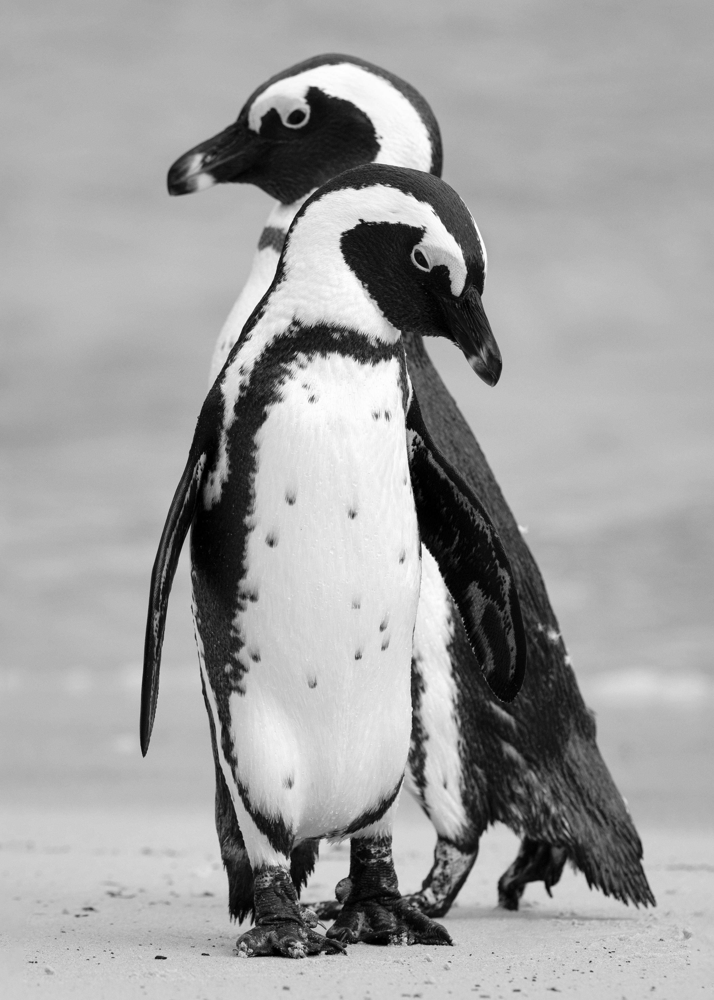

Penguins
Interesting facts about penguins!
- Penguins have a black and white coloring which helps them hide from predators
- The smallest species of penguin is the Little penguin or also known as the Blue penguin. These penguins have a height of only 12 inches.
- The largest species of penguin today is the emperor penguins which stand tall at 4 feet 3 inches. The largest species of penguins in history was the Kumimanu fordycei. They stood at 6 feet 8 inches and weighed a whooping 350 pounds!
- Penguins have a very fast metabolism. This causes them to poop often up to 8 times an hour!
- Though penguins are unable to fly, their wings are able to help them swim and keep their balance whenever they walk.
- Most penguins live in areas which do not have much fresh water which has caused them to adapt to be able to consume fresh water!
Some photos and videos of penguins
Two Humboldt penguins
Penguins swimming
Penguins walking